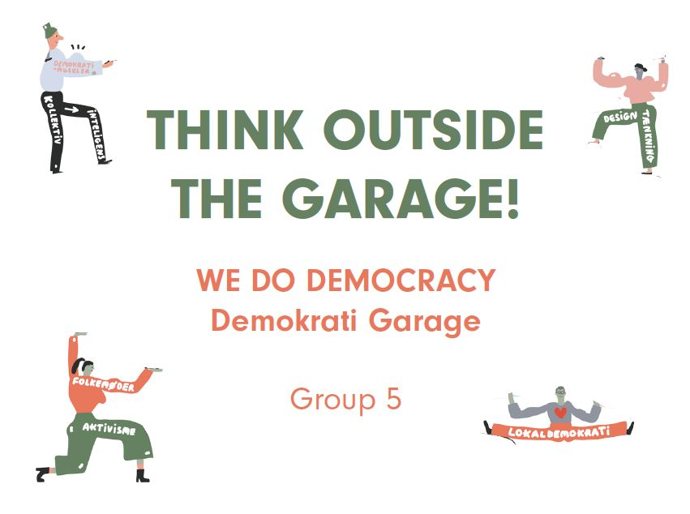

In October 2019 I was 1 of the 10 selected students to go to Copenhagen , where I was going to do an assignment with people from around the globe and different specialties. Here is how that went
We Do Democracy
I was in Copenhagen for 10 days, during that week I was 6 days working on the assignment. I worked from 9 am till 11 pm everyday. I was together in a group with architecture students from Germany and Brazil and Graphic arts students from Italy, Canada and Hong Kong. I was the only Computer Science and Media Design student in the Group.
The assignment, make a concept for a community house for people to get together and discus politics.
The assignment, make a concept for a community house for people to get together and discus politics.
What I did:
I kept the idea’s realistic, making sure we weren’t to ambiguous for the short time that we had. Because of me we had a fully realized product at the end.
I concepted for the community center, what kind of activities there would be and how it will relate with politics
I photoshopped the concept art for the community center.

This is the final presentation that we showed our client.
